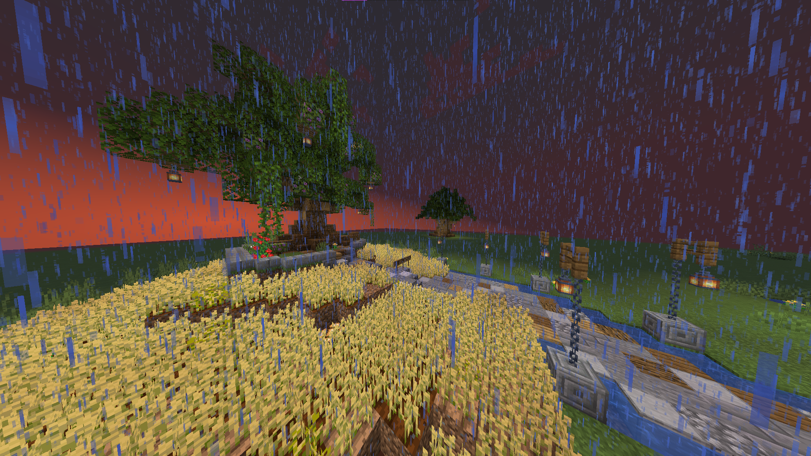
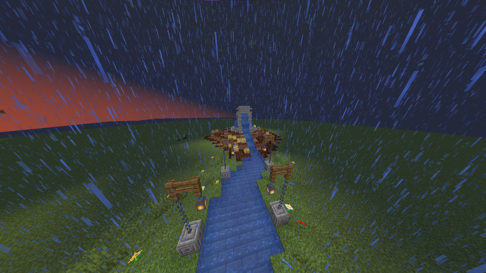
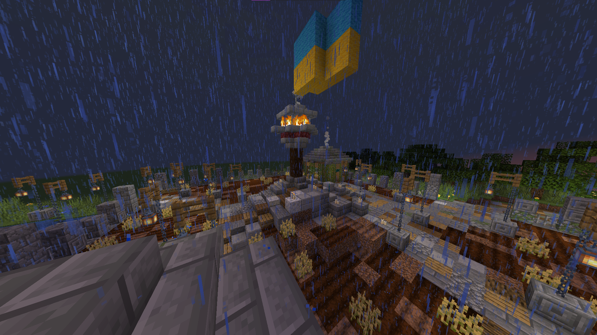
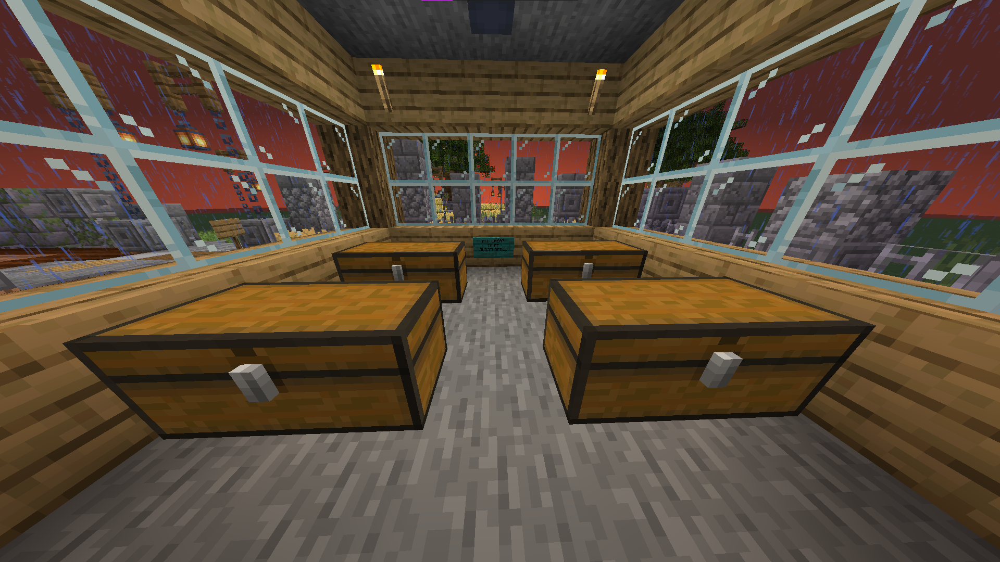

Why Minecraft?
Our main target audience is the younger population who are interested in video games. The primary target outcome of our memorial is for participants to learn more about how collectivisation was carried out and its effects on Ukrainian peasants through a model of a collective farm. Simultaneously, they can also understand its impacts on Ukrainian identity through the structures such as the torch, tree of life and fountain of peace, which highlight how the Ukrainian spirit grew ever stronger after the Holodomor. We hope that they can be sympathetic and aware of atrocities committed under the soviet regime which Russia has yet to recognise and take accountability for.
Gallery



